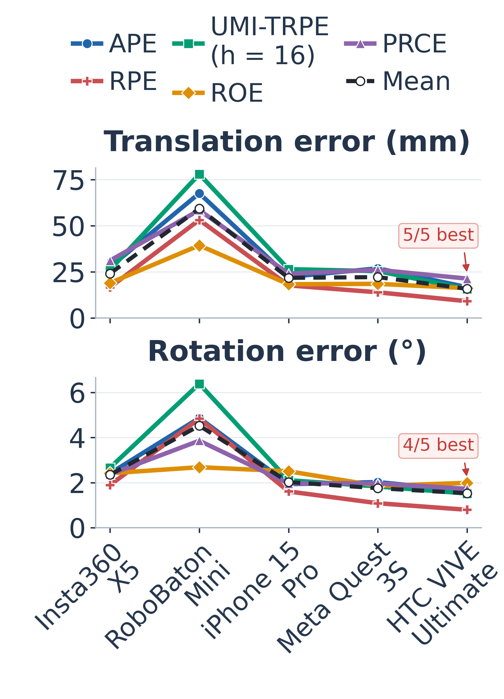

RoboPose
* Equal contribution

One motion, six end-effector pose tracks
Five trackers and the Flexiv robot record the same motion. Position and orientation are synchronized in the aligned Flexiv frame.
Takeaway The median position and rotation differences from Flexiv were 5.3 mm and 1.1° for HTC VIVE Ultimate and 41.8 mm and 1.9° for Insta360 X5.
Explore the trajectories and tool orientations in 3D
Loading recorded trajectories…
- Trajectory accuracy
- Absolute and relative pose error (APE and RPE).
- Action-horizon accuracy
- UMI trajectory-relative pose error (UMI-TRPE).
- Consistency
- Pairwise rigid consistency error and return-to-origin error.
From tracking error to task progress
We measure pose errors on recorded trajectories, then train policies on demonstrations with controlled translation and rotation perturbations.
Tracker accuracy
Takeaway HTC VIVE Ultimate has the lowest error on 5 of 5 translation metrics and 4 of 5 rotation metrics. Meta Quest 3S leads on rotational return-to-origin error.


Policy sensitivity to pose noise
Takeaway Across six RoboTwin tasks, normalized task progress fell from 76% at L8 to 37% at L9 and reached 14% of the no-noise baseline at L10.

What L8 and L9 do to an end-effector pose
The training sampler perturbs each 0.1 s relative end-effector step in translation and rotation, then composes the steps from the same starting pose. L8 uses near-zero-mean Gaussian noise. L9 uses Gaussian and Laplace distributions fitted to tracker errors, with directional bias.
| Level | Per-step scale | Mean end error |
|---|---|---|
| L8 | 6.72 mm / 0.91° | 85.5 mm / 10.6° |
| L9 | 5.47 mm / 0.59° | 163.6 mm / 25.5° |
| L10 | 9.56 mm / 1.00° | 490.9 mm / 46.5° |
Pairs show translation / rotation. Per-step scale is the largest central 68.27% half-width across axes. Mean end error comes from 100 handheld reference trajectories.
Applications
Takeaway For real-robot manipulation, π₀.₅ uses recent observations and end-effector states to directly predict a sequence of end-effector poses relative to the latest observed pose.
Synchronized wrist views and end-effector poses from the recorded UMI demonstrations · 30 fps playback · CC BY 4.0
Simulation examples
Two successful RoboTwin rollouts with both policy end-effector poses shown in the simulation world frame.
RoboPose dataset
Real demonstrations of moving cups, stacking cups, and tossing, collected with handheld UMI and robot teleoperation. Archives include RGB images, end-effector poses and gripper signals.
- Episodes
- 1,569
- Timesteps
- 451,505
- Source archives
- 5